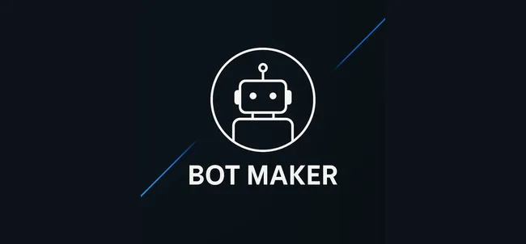
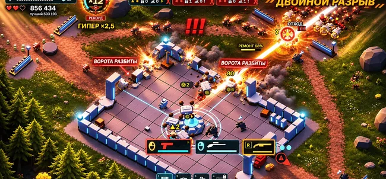
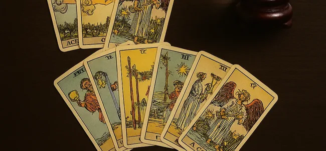
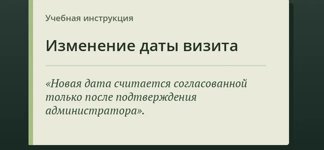
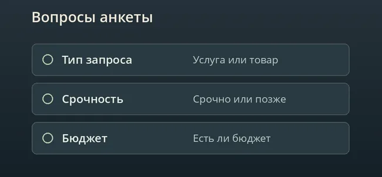
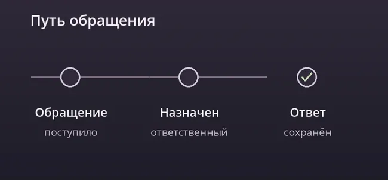
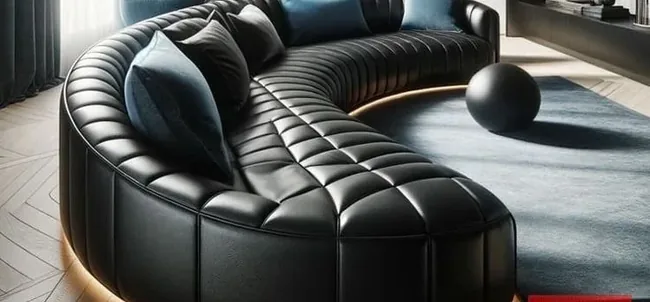
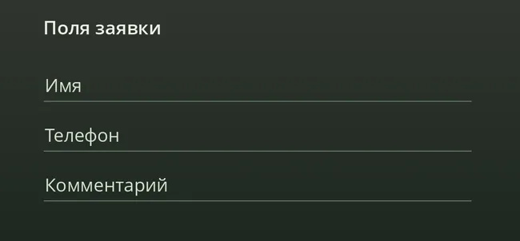
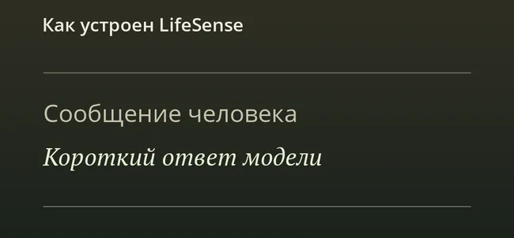

Пример записи
16 февраля
11:00–13:00
16 февраля
11:00–13:00
Бот для массажиста
Запись к специалисту
Клиент находит свободное время для массажа. У специалиста выбранный час появляется в списке записей.
Посмотреть записьДелаю ботов для специалистов и команд. Посмотрите, как клиент выбирает время, куда попадает его заявка и как персонаж продолжает разговор.
Клиент находит свободное время для массажа. У специалиста выбранный час появляется в списке записей.
Посмотреть записьЧеловек выбирает героиню и сцену. Она отвечает в своём характере и помнит детали их разговора.
Прочитать диалог
Посетитель смотрит работы, узнаёт подробности и оставляет контакт прямо в боте.
Смотреть экраны
Имя и контакт можно исправить перед отправкой. Показываю одну заявку вплоть до списка у владельца.
Проследить заявку
Моя игра об обороне крепости. Защищайте трое ворот, заряжайте оружие и взрывайте золотых демонов цепочкой.
Об игре
Посетитель знакомится с услугой, получает расклад и может оставить контакт для консультации.
Открыть меню
Сотрудник задаёт вопрос по вашей инструкции. Бот находит нужный пункт и показывает, где его проверить.
Посмотреть материал
До первого разговора вы знаете, что нужно человеку, насколько срочно и есть ли бюджет.
Разобрать анкету
Ответственный видит назначенное обращение и отвечает на него. Ответ сохраняется вместе с обращением.
Посмотреть схемуПосетитель выбирает процедуру для волос, сообщает контакт и желаемое время визита.
Подробнее
Заказчик указывает тип дивана, желаемый размер и бюджет. У мастера есть исходные данные для разговора.
Подробнее
Человек оставляет имя, телефон и пояснение, с чем обращается.
Подробнее
Человек пишет сообщение и получает короткий ответ модели.
ПодробнееРасскажите, кто будет пользоваться ботом и что сейчас делается вручную. Договоримся о сценарии, цене и сроке. Могу показать похожую работу в Telegram.
Написать ВасилиюЛичный чат · @CVmorion